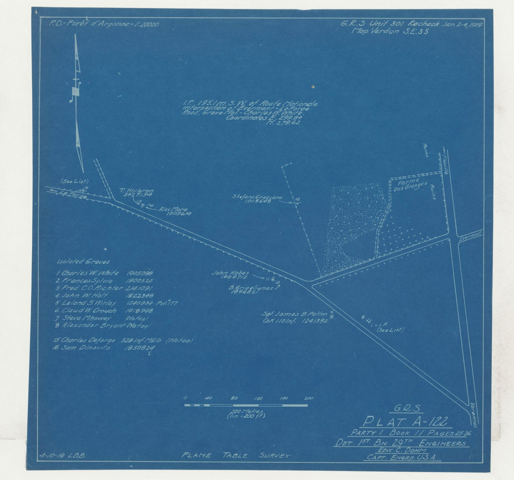
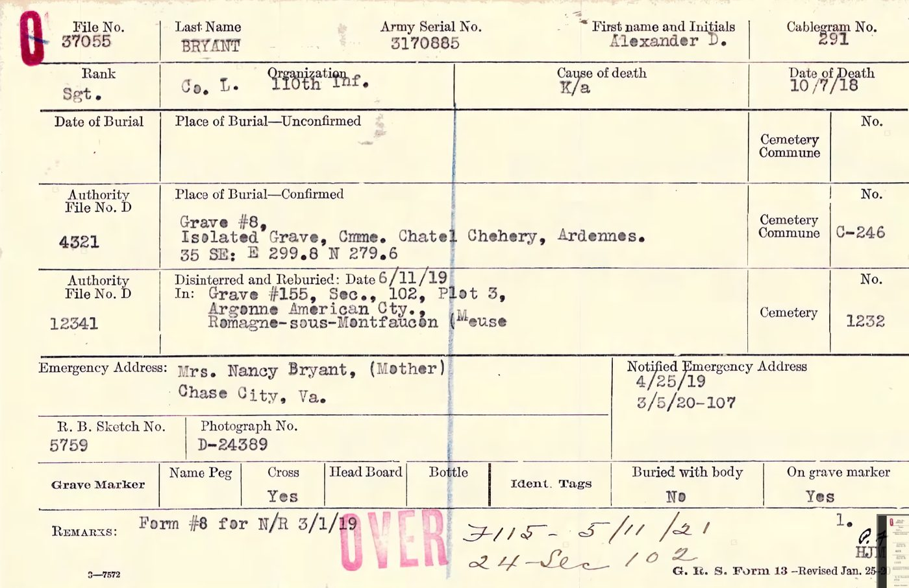
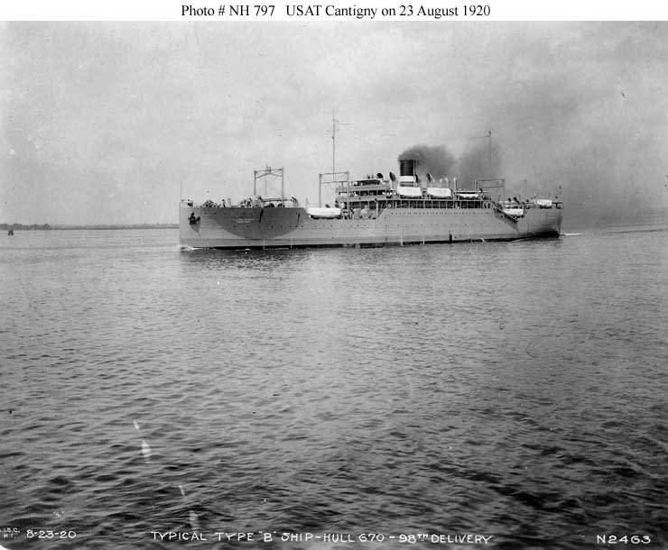
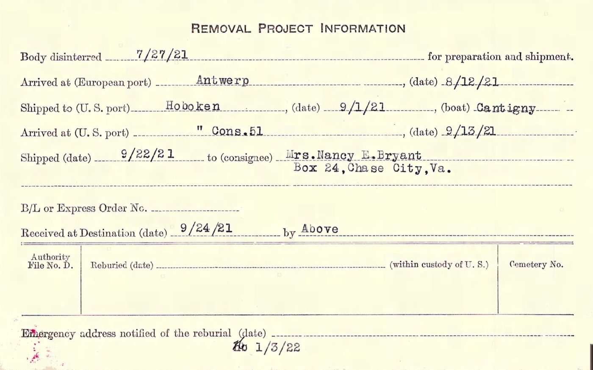
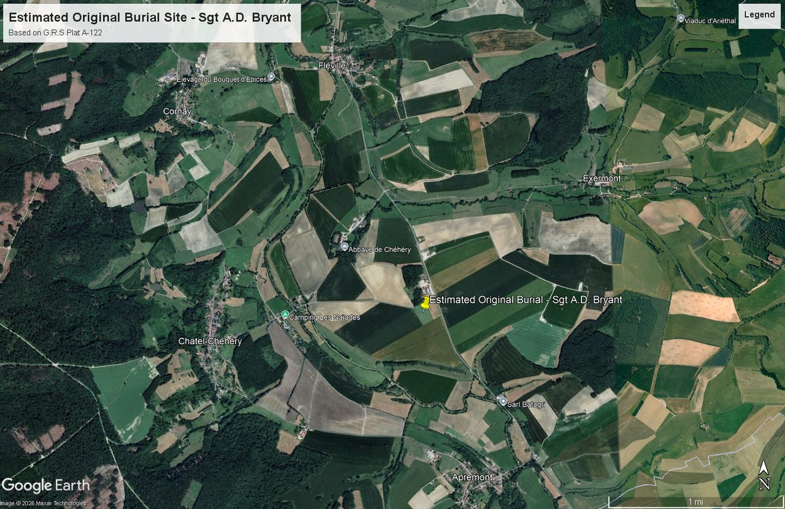
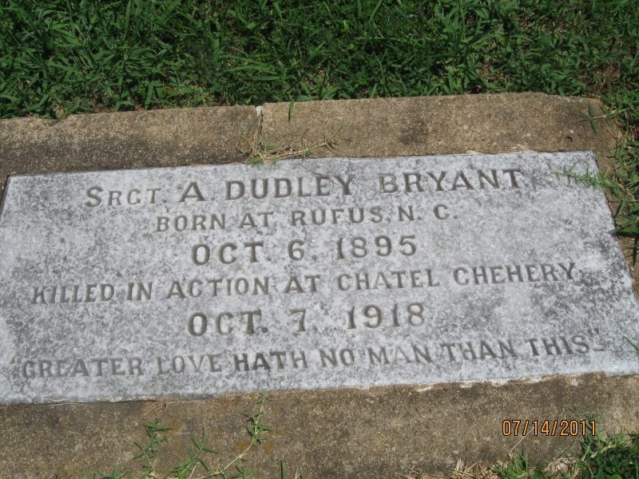

It took three years and three burials to get him back to Virginia.
He was buried where he fell, and then twice more.
He was put in isolated Grave 8, in the commune of Châtel-Chéhéry, at map reference 35 SE E299.8 N279.6 — a Graves Registration Service map square, recorded to a hundred metres. Not a cemetery. A field, and a marker.
What the marker was made of, and what shape it took, the record does not say. What it does say is that his identification tag was on it.

On 11 June 1919 he was disinterred and reburied in Grave 155, Section 102, Plot 3, of the Argonne American Cemetery at Romagne, in France. That is the graveyard the American army built for the men of that offensive, and had things gone differently he would still be in it. There he would almost certainly have had a cross, because that is what that cemetery gave its dead — but the first marker, in the field, is simply not described anywhere.


After the war the government offered the next of kin a choice: leave him in France among the men he died with, or have him brought home. Nancy E. Bryant chose home.
He was disinterred a second time on 27 July 1921, moved to Antwerp on 12 August, and sailed on the USAT Cantigny, arriving Hoboken on 1 September 1921. On 22 September 1921 he was shipped to his mother.


He lies in Woodland Cemetery — also called Chase City Cemetery — on East Sycamore Street. It is a few minutes from where the old home place stood.

Walter Newton Bryant was thirty years old in October 1918, farming and saw-milling with a wife and children, exempted and at home. Nothing in this project records what he was told, or when, or by whom, or what he did about it.
What can be said is that he was the brother who was there — the one in the house when the telegram came to Box 24, and the one still in Virginia three years later when the crate arrived. He is the only one of the three who saw the whole of it happen from beginning to end.